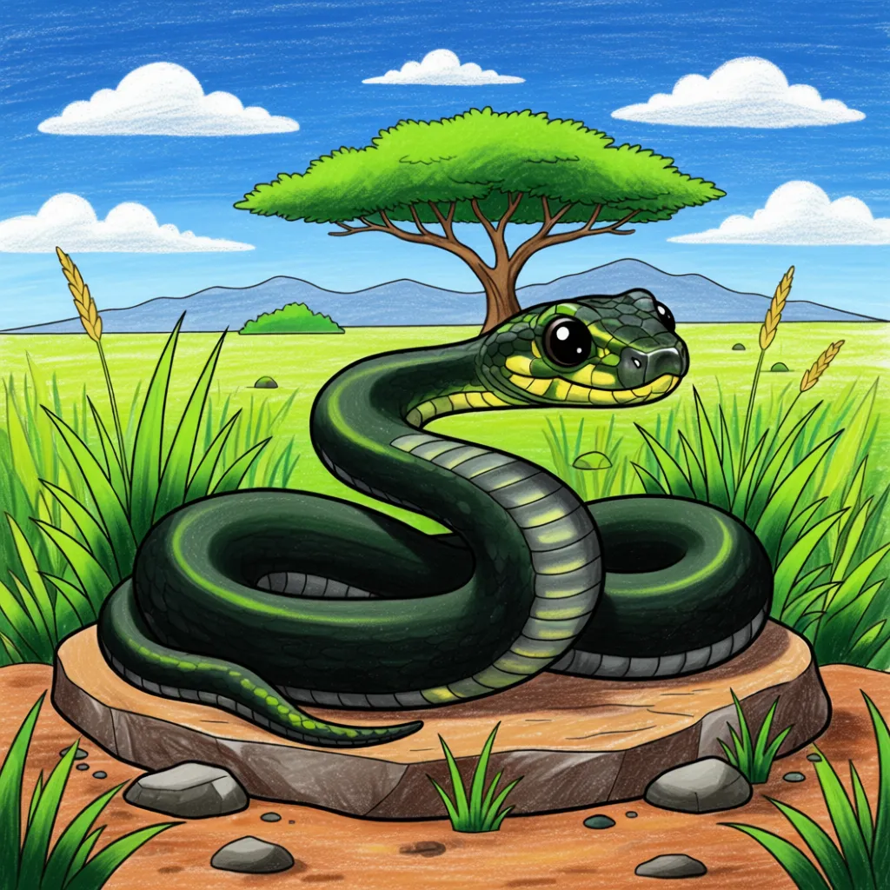

Black Mamba
Dendroaspis polylepis

Key Characteristics
- The Black Mamba is one of the world's fastest and most feared snakes, known for its speed and powerful venom.
- Despite its name, its skin is usually olive or gray; the name comes from the inky-black color inside its mouth.
- Mambas are tree-dwelling but spend time hunting on the ground, often returning to the same den every night.
Peculiar Facts (Fun Facts!)
- They can grow up to 14 feet long and move at speeds up to 12.5 mph (20 km/h)—only a human can run faster!
- If threatened, it displays a characteristic threat pose: flattening its neck into a hood and opening its black mouth wide.
- They play a crucial role in their ecosystem by controlling rodent populations.